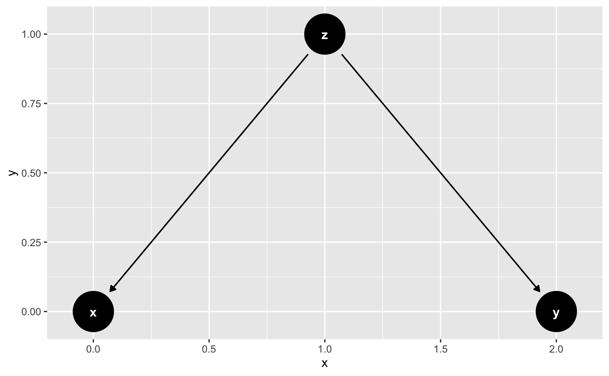

Quickly create a DAGs with common structures of bias
base functions create an object of class dagitty; ggdag_* functions
are wrappers that also call ggdag() on the dagitty object.
m_bias(x = NULL, y = NULL, a = NULL, b = NULL, m = NULL, x_y_associated = FALSE) butterfly_bias(x = NULL, y = NULL, a = NULL, b = NULL, m = NULL, x_y_associated = FALSE) confounder_triangle(x = NULL, y = NULL, z = NULL, x_y_associated = FALSE) collider_triangle(x = NULL, y = NULL, m = NULL, x_y_associated = FALSE) mediation_triangle(x = NULL, y = NULL, m = NULL, x_y_associated = FALSE) ggdag_m_bias(x = NULL, y = NULL, a = NULL, b = NULL, m = NULL, x_y_associated = FALSE, edge_type = "link_arc", node_size = 16, text_size = 3.88, text_col = "white", node = TRUE, text = TRUE, use_labels = NULL) ggdag_butterfly_bias(x = NULL, y = NULL, a = NULL, b = NULL, m = NULL, x_y_associated = FALSE, edge_type = "link_arc", node_size = 16, text_size = 3.88, text_col = "white", node = TRUE, text = TRUE, use_labels = NULL) ggdag_confounder_triangle(x = NULL, y = NULL, z = NULL, x_y_associated = FALSE, edge_type = "link_arc", node_size = 16, text_size = 3.88, text_col = "white", node = TRUE, text = TRUE, use_labels = NULL) ggdag_collider_triangle(x = NULL, y = NULL, m = NULL, x_y_associated = FALSE, edge_type = "link_arc", node_size = 16, text_size = 3.88, text_col = "white", node = TRUE, text = TRUE, use_labels = NULL) ggdag_mediation_triangle(x = NULL, y = NULL, m = NULL, x_y_associated = FALSE, edge_type = "link_arc", node_size = 16, text_size = 3.88, text_col = "white", node = TRUE, text = TRUE, use_labels = NULL)
Arguments
| x, y, a, b, m, z | Character vector. Optional label. Default is |
|---|---|
| x_y_associated | Logical. Are x and y associated? Default is |
| edge_type | a character vector, the edge geom to use. One of: "link_arc", which accounts for directed and bidirected edges, "link", "arc", or "diagonal" |
| node_size | size of DAG node |
| text_size | size of DAG text |
| text_col | color of DAG text |
| node | logical. Should nodes be included in the DAG? |
| text | logical. Should text be included in the DAG? |
| use_labels | a string. Variable to use for |
Value
a DAG of class dagitty or a ggplot
Examples
ggdag_confounder_triangle()